Experience
Internship Experience
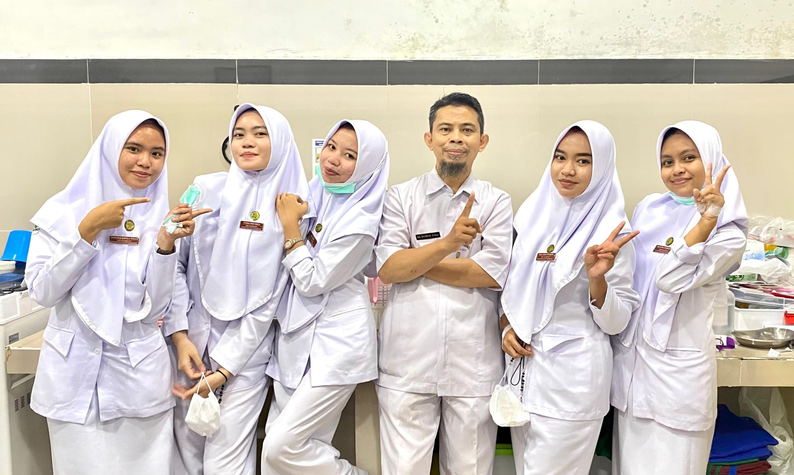
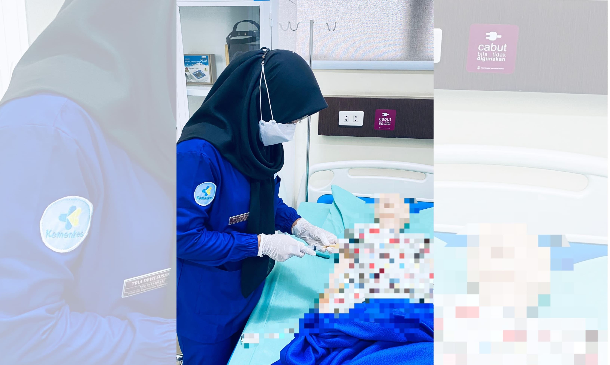
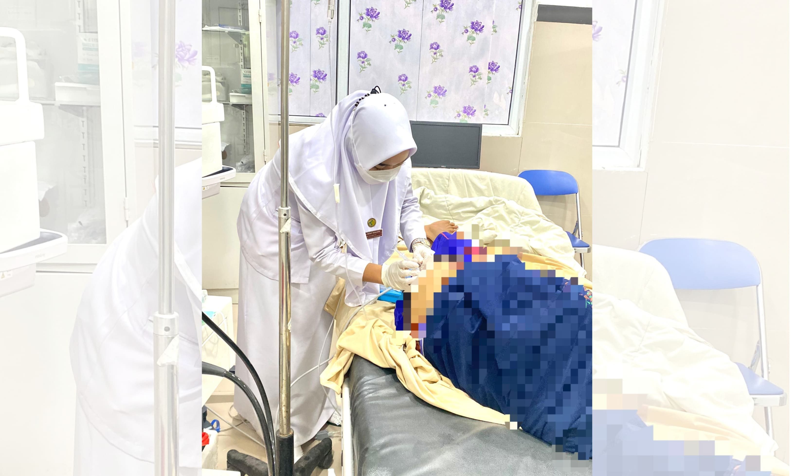
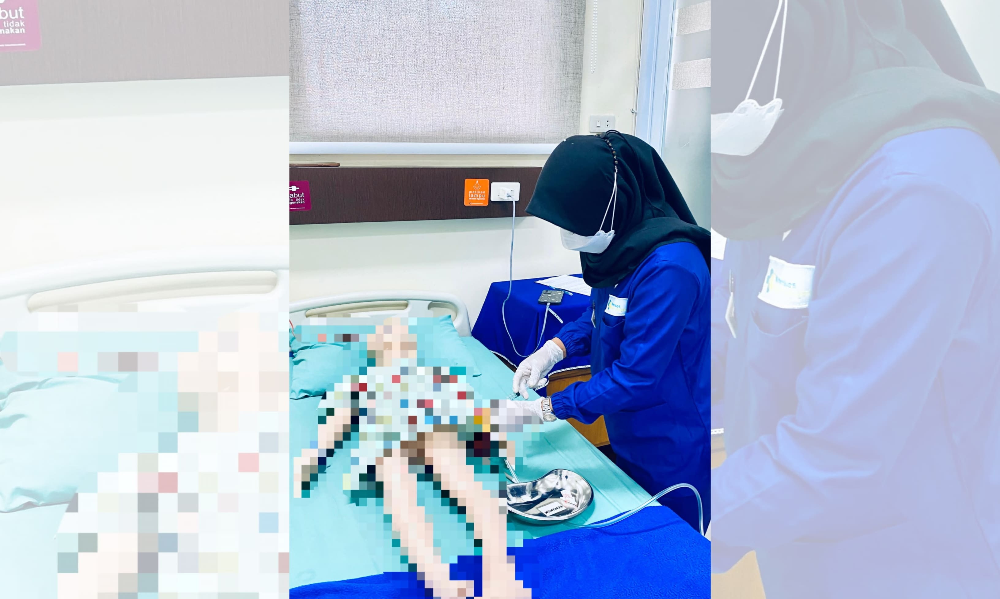
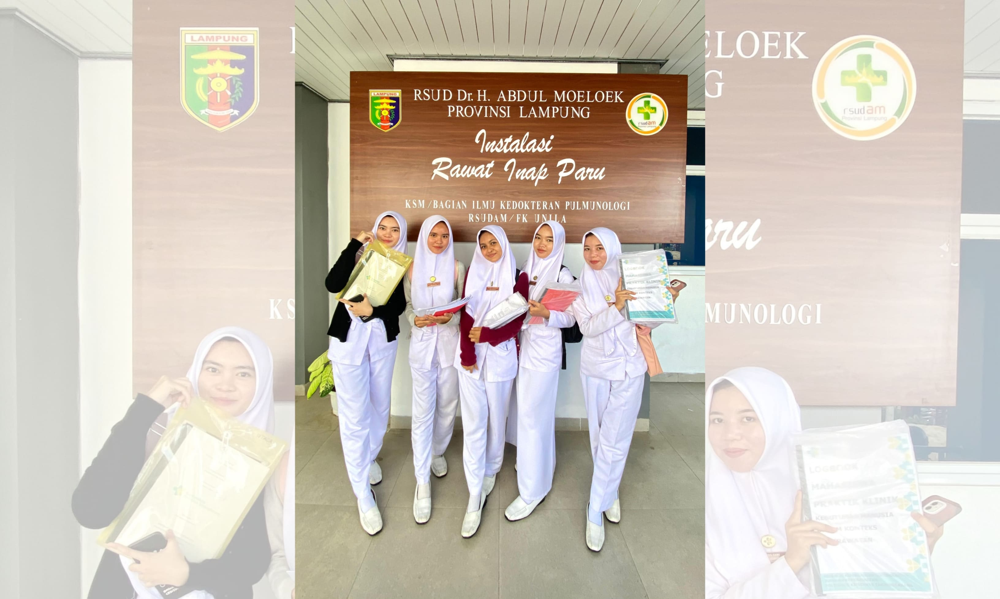
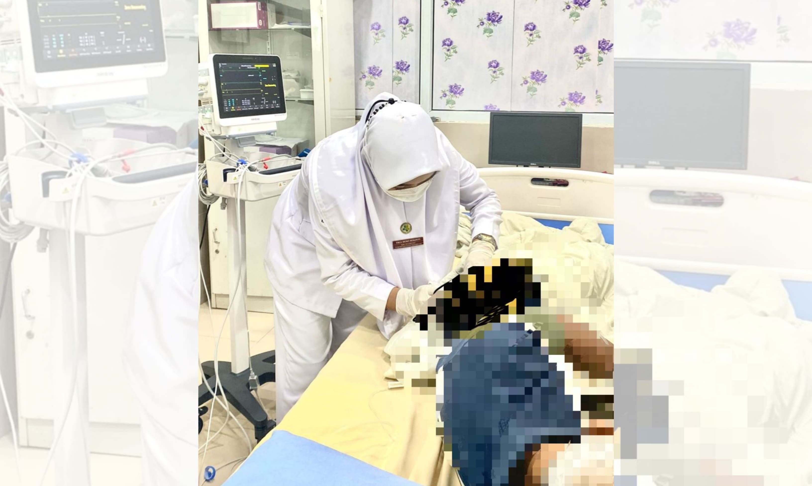
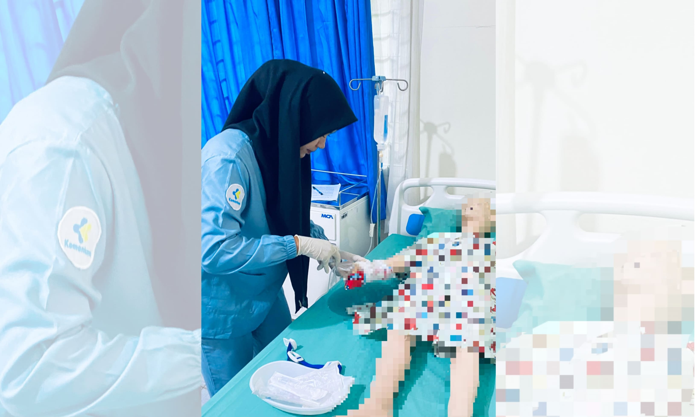
1. Administering blood transfusions to patients according to procedure and under the supervision of medical personnel.
2. Performing blood glucose monitoring and collecting blood samples for laboratory testing.
3. Inserting IV lines and monitoring IV fluids on a regular basis.
4. Administering medications through various routes (intramuscular, intravenous, and oral) as prescribed by physicians.
5. Providing nebulizer therapy for patients with respiratory issues.
6. Administering nutrition via Naso Gastric Tube (NGT) according to patient needs.
7. Assisting and providing support during bronchoscopy procedures under the supervision of medical personnel.
8. Participating in various other nursing activities that support the patient recovery process.
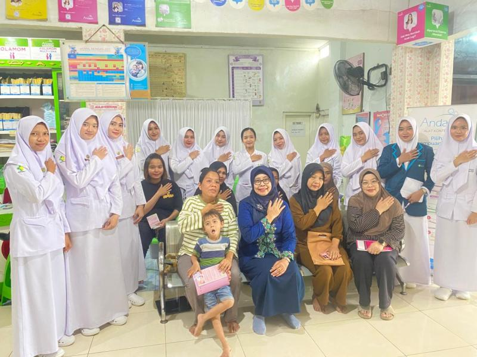
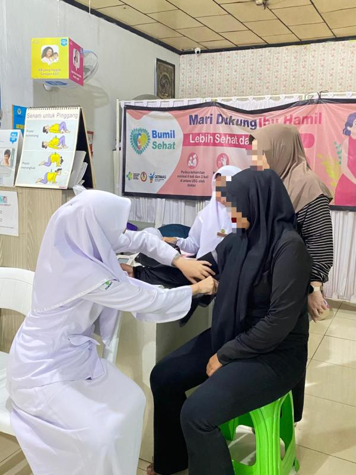
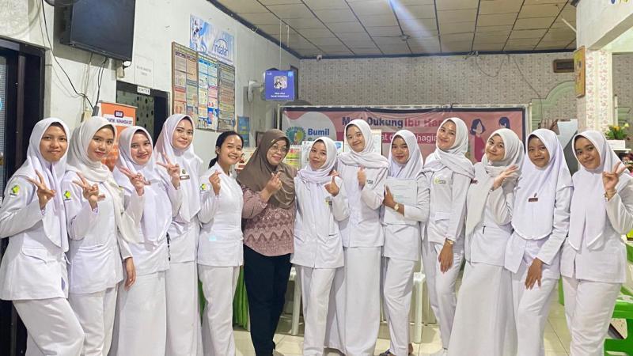
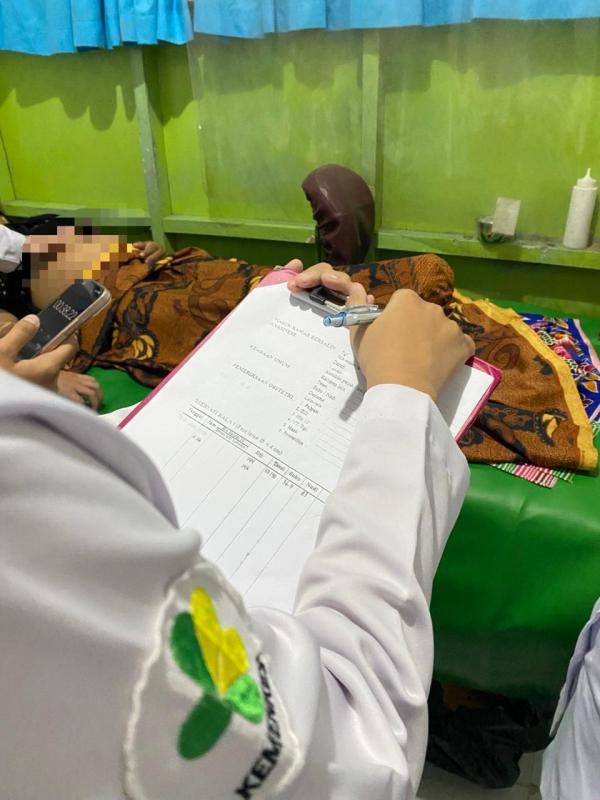
Maternity Nursing
1. Performing precise Leopold I-IV physical examinations to determine fetal position and monitoring fetal well-being through fetal heart rate (FHR) observation.
2. Monitoring vital signs (TTV) and labor progress periodically from the first to the fourth stage, ensuring the safety and comfort of the mother and baby throughout the labor process.
3. Providing ongoing care to the mother postpartum, including monitoring uterine involution.
4. Monitoring the critical period immediately after delivery (Stage IV) to prevent bleeding risks and ensure maternal hemodynamic stability.
5. Contributing to basic and advanced immunization programs, including administration of Hepatitis B, BCG, Polio, DPT-HB-Hib, PCV, and Rotavirus vaccines, as well as assisting in preventive care procedures (e.g., contraceptive injections).
6. Assisting in the preparation and compounding of medications according to prescribed dosages and strict medical protocols.
7. Providing education and self-care instructions to postpartum women to facilitate uterine involution and overall health recovery.
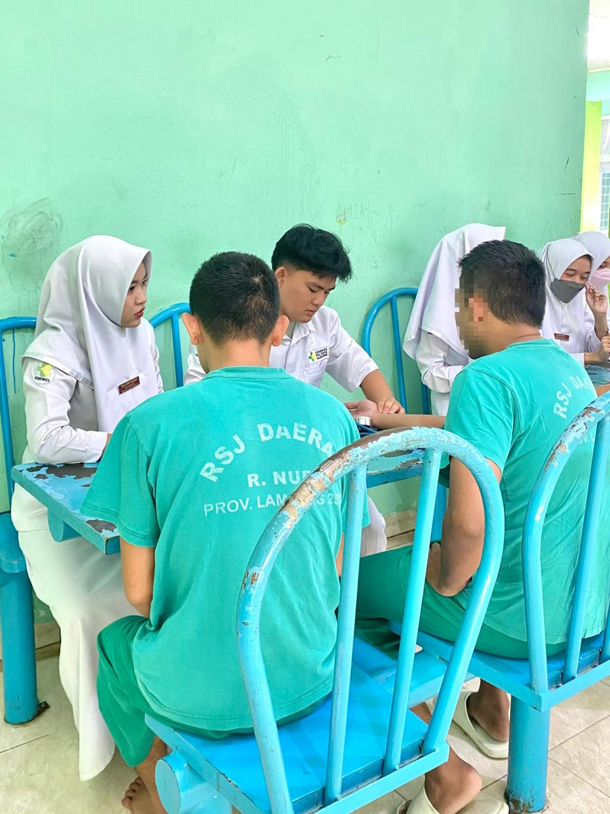
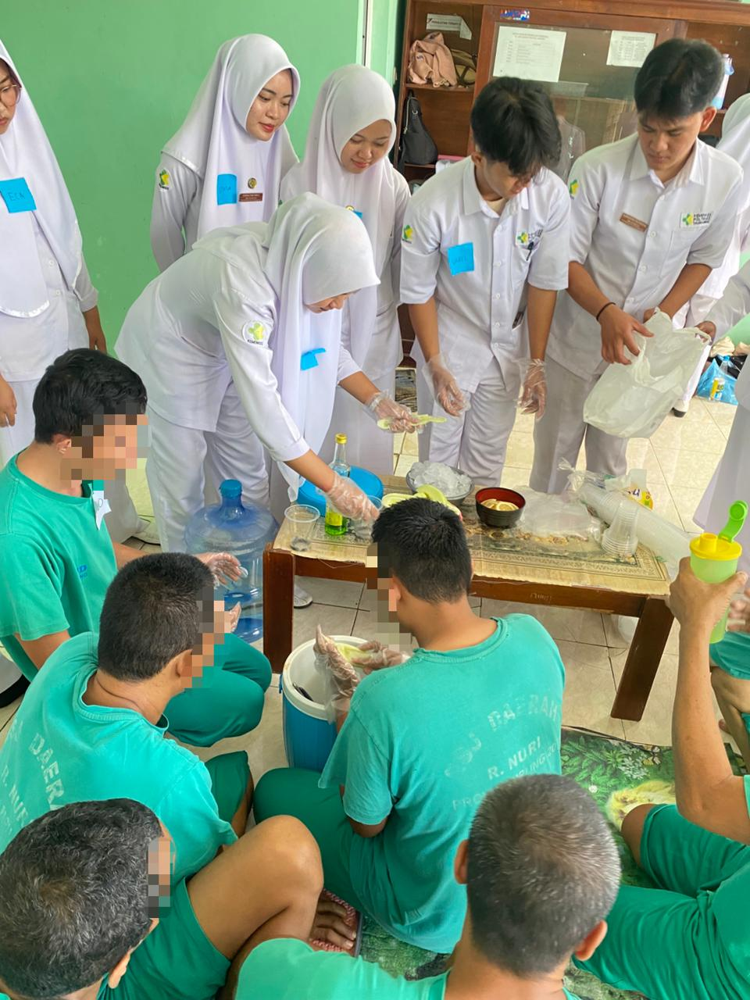
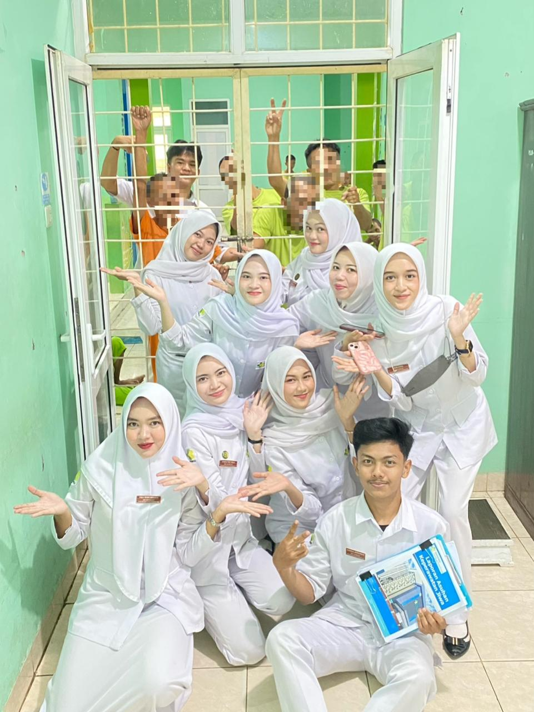
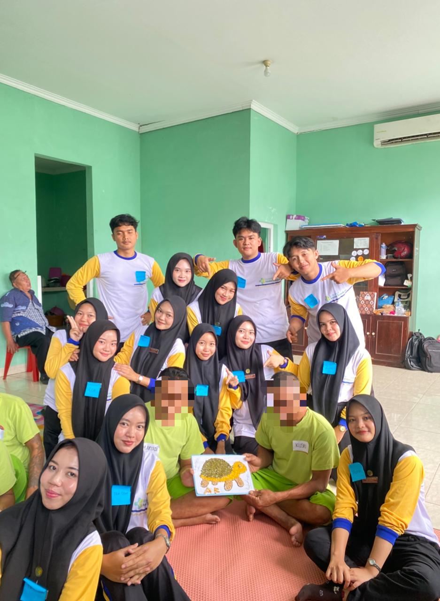
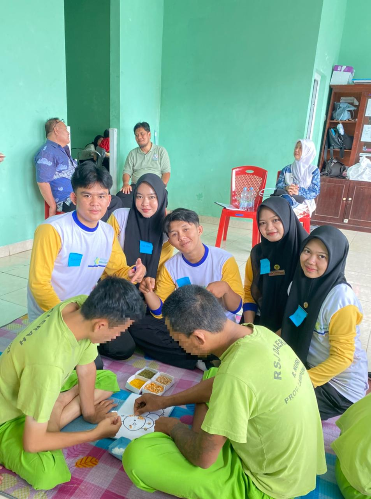
Psychiatric Nursing
1. Teaching cognitive-behavioral strategies through techniques such as assertive refusal, engaging in conversation with others, optimizing social interactions, creating structured activity schedules, and providing education on medication therapy.
2. Training anger management through a multidimensional approach, as well as conducting crisis management, verbal de-escalation techniques, and training the safe channeling of aggression through physical, verbal, and spiritual means to ensure the safety of the treatment environment.
3. Building Therapeutic Relationships (Therapeutic Alliance / Trusting Relationship) as the main foundation of psychosocial interventions.
4. Facilitating social adaptation skills gradually (from one-on-one to group settings) as well as actively involving patients in Group Activity Therapy (TAK).
5. Educating and assisting in the independence of providing basic needs (personal hygiene, dressing, toileting) to improve patients' self-esteem and quality of life.